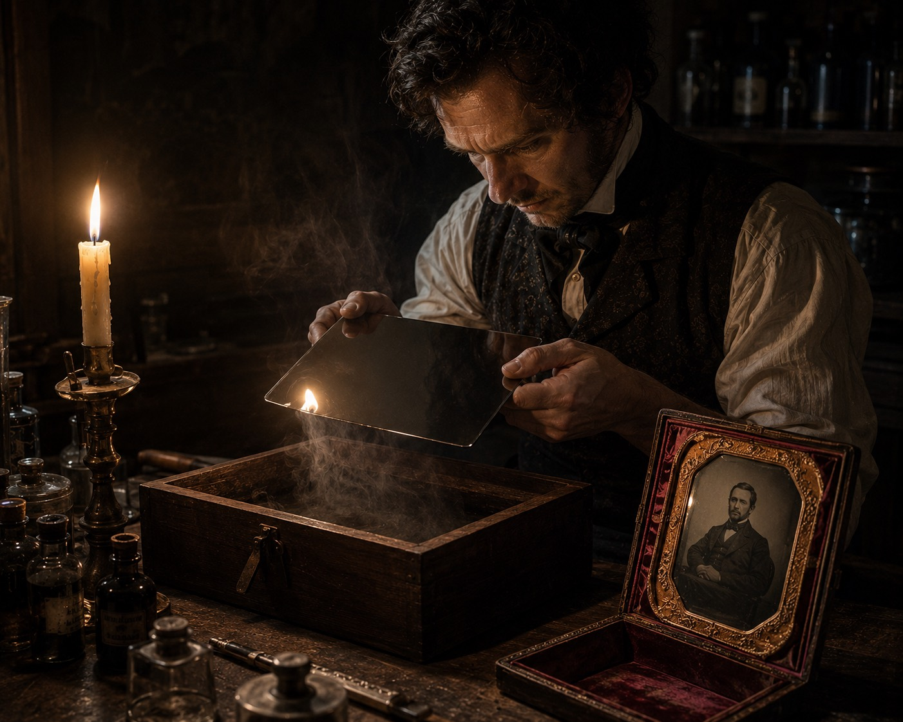
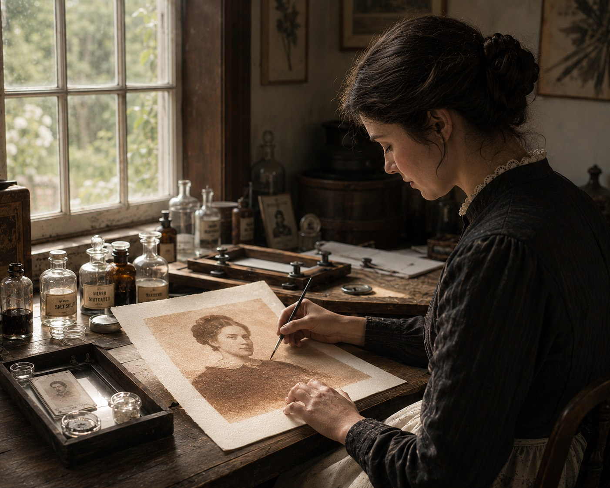
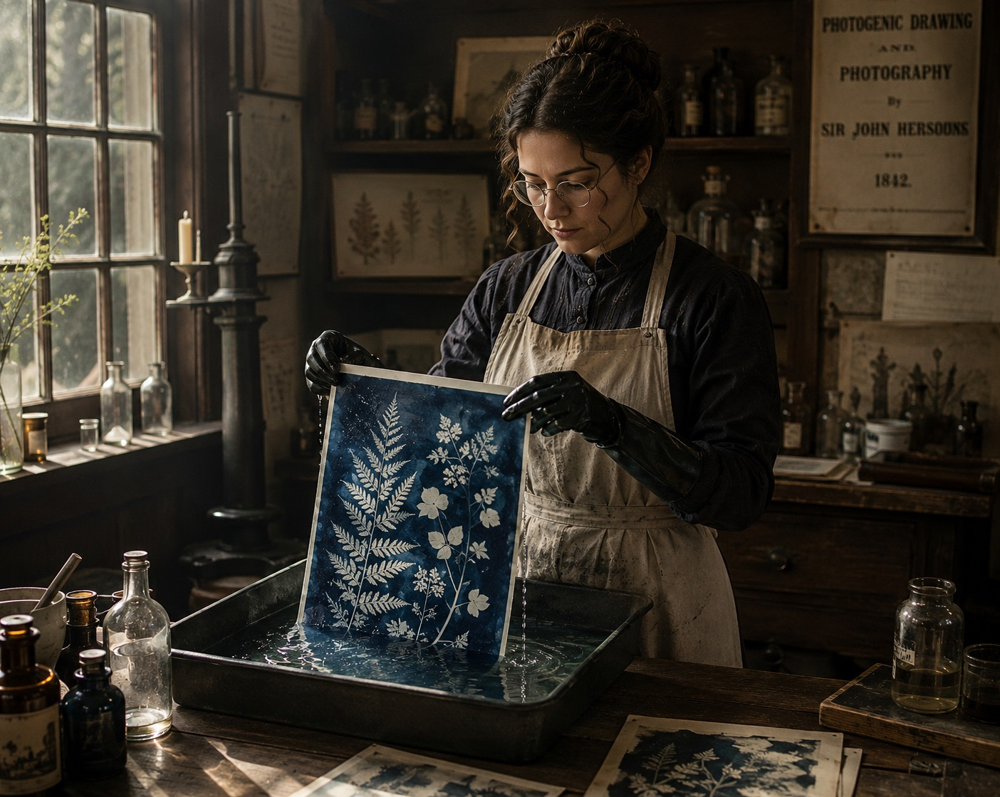
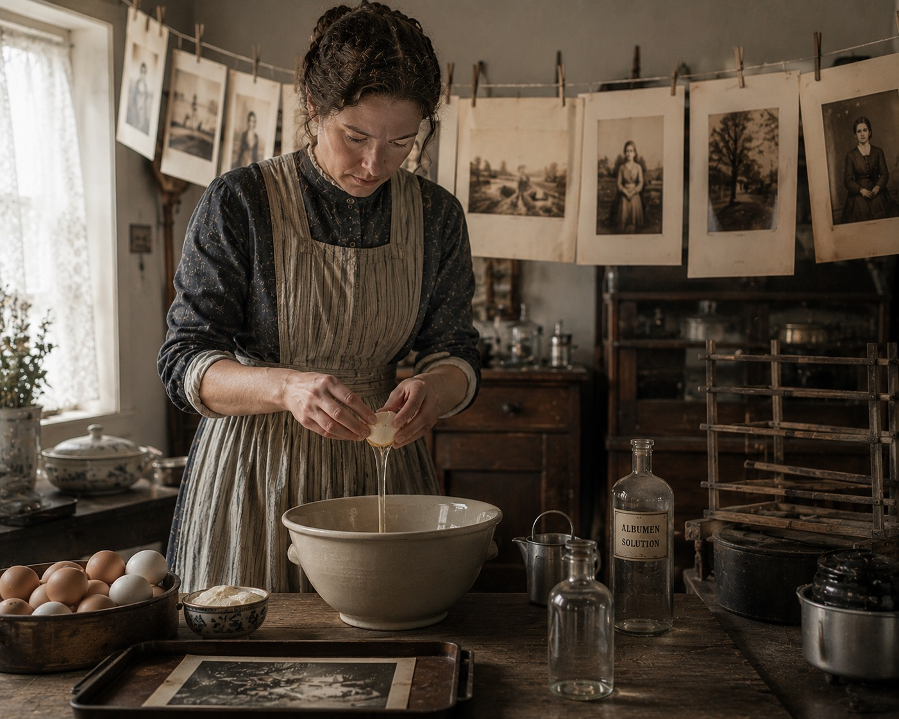
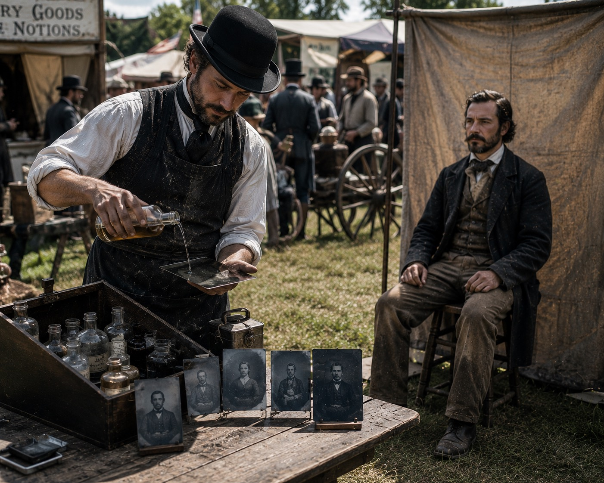
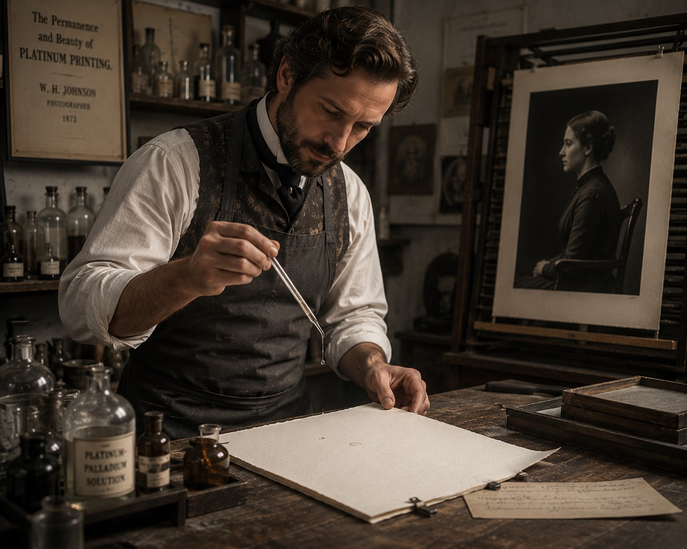
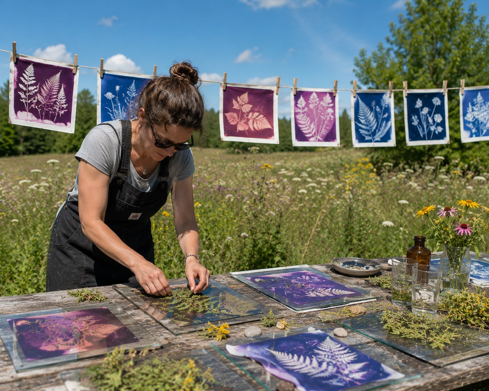

A short history of light
Photography was not invented once. It was invented over and over, by chemists, astronomers, painters and fairground hustlers, each time with different materials and a different idea of what a picture is for. Where a process lives in the lab, you can stop reading and go make one.
The first fixed image
Nicéphore Niépce coats a pewter plate with bitumen of Judea, points a camera obscura out of his workroom window in Burgundy, and waits at least a full day. The bitumen hardens where the light falls. When he rinses the rest away, the view from the window stays: rooflines, a pear tree, both sides of the courtyard lit by a sun that had time to cross the sky.
The daguerreotype

Niépce dies; his partner Louis Daguerre keeps working. His plate is silvered copper, polished to a mirror, fumed with iodine, developed over warm mercury. The French state buys the invention and gives it, in the phrase of the day, free to the world. Within months there are portrait studios on rooftops from Paris to New York.
Each plate is one of a kind, left for right like a mirror, and the image flips from positive to negative as you tilt it against the light.
Make a daguerreotypeThe negative, and the salt print

In England, William Henry Fox Talbot has been printing with paper, salt and silver. His calotype negative can be printed again and again: the idea of the copy enters photography here, and never leaves. The positives, salted paper prints, are matte and warm, the image held in the fibre of the paper itself.
Make a salt printIron, blue, and the garden

Sir John Herschel, astronomer and friend to both camps, treats photography as open chemistry. From his workbench come the cyanotype, printed in Prussian blue by two iron salts, and the anthotype, an image bleached by weeks of sun into crushed petals and leaves.
A year later Anna Atkins lays algae on cyanotype paper and binds the results as the first book illustrated by photography.
Make a cyanotype Make an anthotypeAlbumen, and the family album

Louis Désiré Blanquart-Evrard floats paper on salted egg white before sensitizing it, and the image moves from inside the paper to a glossy skin on its surface. Printed by the million from glass negatives, the albumen print is what the nineteenth century looks like in every archive and every family album: sepia, crisp, faintly yellowed at the whites.
Make an albumen printWet collodion

Frederick Scott Archer pours collodion over glass and exposes it while it is still wet: sharper than paper, faster than the daguerreotype, and free, because he never patents it. On lacquered iron instead of glass it becomes the tintype, the fairground portrait finished while the sitter waits, tough enough to survive a soldier's pocket through a war.
Make a tintypePlatinum, and the noble prints

William Willis patents the platinotype: iron salts catch the light, a developing bath swaps them for platinum lodged in the paper fibre. Matte, neutral, effectively permanent, with the longest tonal scale in photography. When platinum prices soar, printers turn to palladium, and to humbler iron-silver recipes like the Van Dyke brown of 1895.
Make a platinum print Make a Van Dyke brownYou press the button
George Eastman sells a box already loaded with a hundred frames of roll film: you press the button, we do the rest. The darkroom leaves the photographer's house. Gelatin silver paper, fast, industrial and standardized, will carry the black and white photograph for the next century.
Colour arrives
The Lumière brothers dye millions of grains of potato starch red, green and violet and spread them over glass: the autochrome, colour photography as pointillism. Kodachrome follows in 1935, and colour slowly stops being a miracle and becomes the default.
Small cameras, instant pictures
The Leica puts cinema film in a pocketable camera and photography learns to move at the speed of the street. In 1948 Edwin Land's Polaroid folds the darkroom into the print itself: sixty seconds between the shutter and the picture in your hand.
The sensor
At Kodak, Steven Sasson wires a CCD to a cassette recorder and makes the first digital photograph: a hundred by a hundred pixels, twenty-three seconds to record. Within three decades the sensor is in every pocket and the photograph becomes the most common object human beings make.
The return of slow light

And still, printers coat paper by hand. Lumen printers lay leaves on expired photo paper and let the sun draw in pinks and rusts no developer would give. The old processes survive not as nostalgia but as a way of asking what a photograph is made of: iron, silver, egg, juice, time.
This site is part of that question. Everything you make in the lab is computed light pretending, carefully, to be chemistry.
Make a lumen print